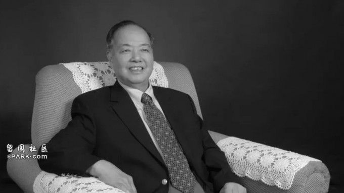

记者从王垂林等多位李政道教授友人方面获悉，著名物理学家、诺贝尔物理学奖得主李政道教授，因病医治无效，于美国时间8月4日在旧金山逝世，享年98岁。

诺贝尔物理学奖得主李政道逝世，享年98岁。
今天中午，社交媒体流传诺贝尔物理学奖得主李政道逝世。上海复旦大学物理系教授施郁在微博发布消息：「伟大的物理学家李政道先生永垂不朽，消息可靠。」澎湃新闻下午报道，从王垂林等多位李政道教授友人方面获悉，著名物理学家、诺贝尔物理学奖得主李政道教授，因病医治无效，于美国时间8月4日在三藩市逝世，享年98岁。
李政道，1926年生于中国上海，原籍江苏苏州。1944-1946年先后就读于浙江大学、西南联合大学。1950年获美国芝加哥大学哲学博士学位。
李政道长期从事物理学研究，在粒子物理理论、原子核理论和统计物理等领域做出了一系列具有里程碑意义的工作。1954年，提出李模型，对探讨量子场论基本问题起到重要作用。1956年，与杨振宁一起提出弱相互作用中宇称不守恒的论断，翌年经实验验证后，共同获得诺贝尔物理学奖和爱因斯坦科学奖。
上世纪60年代以来，在正反粒子变换和空间反射联合变换下不守恒问题方面进行了系统研究；70年代以来，在建立与发展孤立子的量子理论、提出反常核态的概念、建立与发展随机格点规范理论、把时间作为分立动力学变数并进而建立分立动力学理论等方面都做出了开创性的贡献。1994年当选为中国科学院外籍院士。
李政道1956年任美国哥伦比亚大学教授，1960年任普林斯顿高等研究院教授，1964年任哥伦比亚大学费米讲座教授，1984年任哥伦比亚大学全校讲座教授。美国艺术和科学院院士(1959)、美国国家科学院院士(1964)、义大利林琴科学院外籍院士(1982)和台湾中央研究院院士(1957)。